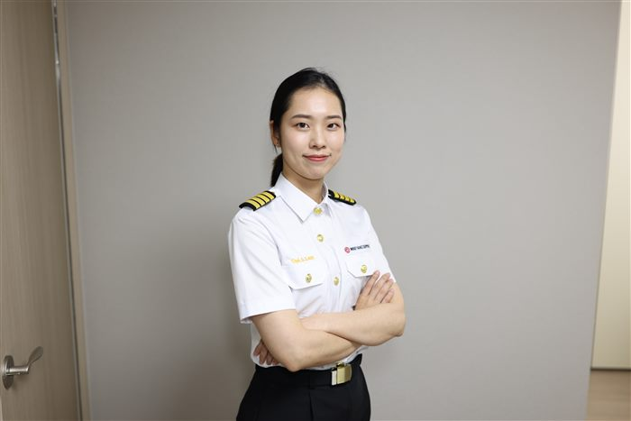

NAVIGATION CONSULTATION
항해 상담실
지금 상황을 몇 줄만 알려주시면, 김승주 선장의 실제 경력을 바탕으로 AI가 선장님을 대신해 답해드립니다. 방문자 본인의 Claude 계정 사용량이 사용되며, 첫 질문 시 사용 동의를 한 번 확인합니다.

김승주 선장과의 항해 상담
AI가 실제 경력을 바탕으로 답변합니다
답변은 참고용 AI 상담이며, 실제 김승주 선장의 답변이 아닙니다. 진로에 대한 중요한 결정은 실제 상담·강연을 통해 확인해 주세요.
FAQ
자주 묻는 질문
어떻게 항해사가 되셨나요?
한국해양대학교 해사수송과학부를 졸업하고 2016년 2월 삼등항해사로 첫 승선했습니다. 오빠가 같은 학교에 다니고 있었던 것이 진로에 자연스러운 영향을 주었습니다.
여성 항해사로 일하며 흔치 않았던 점은 무엇인가요?
승선 당시 회사 소속 항해사 500명 중 여성은 단 3명뿐이었습니다. 흔치 않은 환경이었지만 삼등항해사부터 선장까지 모든 계급을 차례로 거쳤습니다.
선장이 되기까지 얼마나 걸렸나요?
2016년 삼등항해사로 시작해 2025년 4월 선장이 되기까지 9년이 걸렸습니다. 계급별 승선 기록은 항해 일지에서 볼 수 있습니다.
책은 어떤 순서로 읽으면 좋을까요?
출간 순서대로 『나는 스물일곱, 2등 항해사입니다』 → 『오진다 오력』 → 『해운 무역의 리더 항해사』 순으로 읽으면 커리어의 흐름을 따라갈 수 있습니다.
이 AI 상담은 어떻게 작동하나요?
방문자가 남긴 상황을 바탕으로, 김승주 선장의 실제 경력 정보를 참고해 AI가 답변을 생성합니다. 방문자 본인의 Claude 계정 사용량이 사용되며, 실제 선장님이 직접 작성한 답변은 아닙니다.